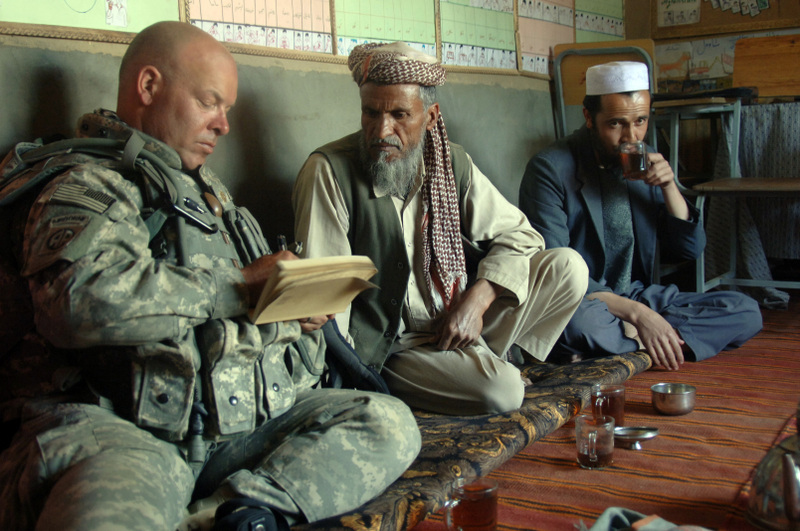
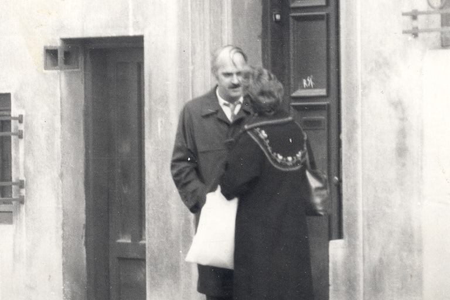

Ali's Blog

 About
About
 Entries
Entries
 Chat
Chat
 Kool Webpages
Kool Webpages
 Guestbook
Guestbook
 Kool Books
Kool Books
 Truth Table
Truth Table
 Contact
Contact

When Romania’s communist regime fell in 1989, its successor state performed a curious act of bureaucratic necromancy by flinging open the vaults of the Securitate, the once-feared secret police, to citizens and foreigners who dared confront the traces of their surveilled lives. Among them was Katherine Verdery—an American anthropologist whose doctoral work into Transylvanian villages had, unbeknownst to her, transmuted field notes on kinship and land tenure into fodder for paranoid statecraft. Her research, being as it is, anthropological, had dealt with the ethnographic details of rural life; she had not, she insists, arrived with the cloak-and-dagger intent her file-minders ascribed to her. Yet in those in reams of yellowing paper, she was intriguied to find a brimming archive of suspicion: intimate photographs snapped from shadows, informants’ whispers, transcribed with the solemnity of state liturgy, dossiers charting her movements as though she were a “mischievous American spy”, as one report declared, its certainty as dense as the Ceaușescu-era concrete that still scars Bucharest’s skyline.
No single motivation explains this paranoia. This was more so a classic case of seeing what you expect to see, particularly when your occupation primes you for it (A researcher with a notebook? A cipher; a researcher taking notes? A provocateur). As Verdery reads her files, she finds that, during the heights of the Cold War, her minders had pegged her as a US spy. As tensions with Hungarians in Romania later escalated, she was reframed as an American spy with Hungarian roots, a Magyar sympathiser. And when internal dissidents came under closer scrutiny, she was recast as an instigator of civil discord. The state’s gaze, ever protean, contorted her identity to fit its pathologies.

That Verdery recounts this with wry detachment—more bemused archivist than indignant victim—speaks to her discipline’s fraught kinship with espionage. Both infiltrate communities, both collect detailed anthropological information. They are kin in method if not in mandate. The difference, one might argue, lies in ethics committees and peer review. But history muddies such distinctions. It was 1919 when Franz Boas set off a scandal by accusing unnamed colleagues of conducting espionage in Central America during World War I. He published his accusations in a letter in The Nation, condemning those who had “prostituted science”. His outraged peers feared that such revelations would taint legitimate research. Yet his concerns did not vanish. Boas’s own student, Ruth Benedict, later gathered what the U.S. government termed 'cultural intelligence' on Japan during World War II, then worked with institutions like the RAND Corporation and the Office of Naval Research in the Cold War era. More recently, the American Anthropological Association (AAA) struggled with the moral quandary posed by the 'Human Terrain System', a controversial U.S. military initiative that embedded anthropologists in Afghanistan and Iraq for counterinsurgency work. Despite the AAA’s ethical guidelines, anthropologists continue to find themselves in corporate and governmental programs that bring them uncomfortably close to surveillance or the extraction of sensitive information.
Thus, that Verdery was not at shocked is understandable given the history of a discpline, let’s recall, was birthed in colonial outposts and war rooms and emerged as a handmaiden to empire: Malinowski’s Trobriand ethnographies were funded by the Australian government during World War I; Evans-Pritchard’s Sudanese fieldwork doubled as colonial intelligence-gathering. Even Boas relied on grants from museums and universities entangled with state interests.
The Securitate’s inability to imagine Verdery as “just a scholar” is at the same time a critique of positivist anthropology; the naïveté of believing any research exists outside ideology. It’s a recognition that the act of observing and documenting human behaviour is inherently political, even (especially?) when the observer believes themselves apolitical. Anthropology’s tools (fieldnotes, interviews, cultural analysis, kinship charts, ritual descriptions, oral histories) are always vulnerable to being repurposed and can serve multiple masters. To study a culture is to dissect it; to dissect is to assert dominion. The very traits that define good fieldwork (embedded observation, close relationships, cultural fluency) can easily appear indistinguishable from intelligence-gathering. The Securitate’s delusions about Verdery, then, were reflections of anthropology’s original sin — the scholar’s gaze as a tool of extraction — and not mere bureaucratic absurdities.
Thus, how could Verdery—or any of her perceived alter-egos—definitively argue against the notion that she was, in some sense, a spy? Her research did yield sociopolitical data which lead her to conclusions that didn't necessarily flatter the Ceaușescu regime. The secret files ultimately leave Verdery questioning her own perception of her identity, asking “with all these identities was I “the same” person?”. Her answer is a resolute “…no. There were several of me, at any one time (the child, the surrogate daughter, the researcher, the department chair, “the Folklorist,” etc. and across time as well.”
This dissonance—between the self one believes oneself to be and the selves reflected in state paranoia—unsettles one's existential identity above and beyond one's professional identity. One is reminded of Luigi Pirandello's novel One, No One, and One Hundred Thousand, in which protagonist Vitangelo Moscarda's world is upended when he learns, through his wife, that his nose is not as perfectly shaped as he believed. This seemingly inconsequential self-misperception of his physiognomy, in which his “self” is supposedly encased, spirals into a desperate quest to uncover other illusions about himself. Throughout his journey in 'discovering' a stable sense of selfhood, Moscarda finds that he is indeed an outsider to himself, appearing one way to himself and another to others.
But that is not the end of his misery because even this outsider is not univocal. Moscarada comes to learn “of the hundred thousand Moscardas that I was, not only for the others but also for myself, all with this one name of Moscarda. Ugly to the point of cruelty all inside this poor body of mine, that was also one. One and alas no one.” He finds that one is a certain someone, but only from a specific perspective: a lovable fool to siblings, a ne'er-do-well to teachers, a deceptive partner to an ex, a warm presence to parents… a crafty spy to the espionage operatives. Yet, this very multiplicity makes it such that is is impossible to identify a single, unadulterated version of ourselves. There is no omniscient perspective, no intrinsic essence, an "I-particle" from which one could chisel out the "true" self.
Verdery had constructed an identity as 'Verdery the Ethnographer', and yet, from another perspective, she is seamlessly recast as 'VERA the American Spy' by her observers. Others create their own versions of our identity which we cannot fully control. When a significant dissonance arises between these internal and external constructs—as when you construct for yourself the identity of a serious academic out to conduct serious research, while others construct that same identity as a treacherous spy—it can drive some to the brink of frenzy, crying out to the world "I AM NOT A SPY, I AM AN ETHNOGRAPHER". Verdery encountered this dissonance head-on, finding herself face-to-face with various strange doppelgängers who she vehemently denies being—the ‘Folklorist’ or ‘VERA’: a cunning, calculating spy, at times disguised as a Hungarian. One could argue that this very book is Verdery's attempt to finally kill her doppelgängers—an intense longing to shatter the perception held by those she left behind in Romania that still see her as a traitor.
p>

Surveillance photos of Verdery, taken by one of her surveillance officers.

The book’s premise is compelling: the discovery and analysis of one's secret file. This meta-research, studying the study of oneself while one was conducting studies on others, forms the foundation of Verdery’s narrative, where the act of looking never quite escapes the shadow of being looked at. Layered within is the near-comical schizophrenia of the secret police (“patriots … defending the positive image of their country”), who viewed each benign act through a prism of suspicion. Verdery effectively showcases this contrast by juxtaposing her academically-oriented field notes and innocent enough personal diary notes with those of the surveillance officers.
The files also transcend Verdery’s personal narrative in another way; they are a chronicle of the Cold War era itself where the personal is inevitably political. In one poignant reflection, Verdery acknowledges that the Cold War made spies of everyone and no one. Romania’s Securitate was one of the most pervasive surveillance apparatuses in the Eastern bloc – by some estimates between 400,000 and 700,000 informants served a population of 20 million. When nearly half a million citizens are spying on their neighbors, trust is a casualty. One is reminded of Michel Foucault’s famous depiction of modern surveillance: “An inspecting gaze, a gaze that each individual under its weight will end by internalising to the point that they are their own overseer”. In this environment, an outsider like Verdery stood little chance of escaping suspicion.
The sheer influence that a foreign researcher's portrayal of a country can have on its international reputation took on a heightened importance during the ideological standoff of the Cold War. Ironically, then, the state authorities in Romania were dealing with the same fundamental problem that Verdery herself faced: the challenge of reconciling the identity they had perceived internally with the version others in the capitalist or non-aligned blocs, perceived from the outside.
If she had wanted, Verdery could have easily become complicit – had she secretly cooperated with the CIA during her fieldwork (which would not have been surprising), for instance, the Securitate’s suspicions would have been vindicated. But she did not. But the language of state power meant that she suffered the consequences anyway, as if she were guilty by association with a long lineage of less scrupulous scholars. Even if Verdery wasn't a de jure spy, even when her spies had subsequently realised as much, the impact of her academic work, her narration of Romania's history and culture, carryies the weight of espionage.
After confronting her secret police file decades later, Verdery was faced with another moral reckoning. How should an anthropologist respond upon learning that some of her dearest friends and interlocutors were coerced into betraying her? With anger? Forgiveness? Understanding? Verdery, to her credit, resists the urge to dismiss her surveillors as mere buffoons and approach them with an anthropologists' empathy, those "sympathetic interpreters who could place their behavior in the context of an unfamiliar set of beliefs and desires", in philosopher Richard Rortys' description of anthropologists. She, therefore, does not indulge in cheap moralising and instead interrogates the conditions that made ordinary people be complicit in a network of deceit. In a series of difficult reunions, she speaks with a number of the individuals who informed on her. Each encounter is a test of her principles. Can she apply the same cultural relativism, positionality, and quest for understanding to the secret police and their informers as she would to any other community she studies? At any rate, we learn of how decent people can be driven to acts of disloyalty under indecent conditions. It is not merely a tale of 'good (american)scholars versus bad (communist) police', but a meditation on the pathology of suspicion that corroded both the watchers and the watched.
Though over the decades, the anthropological community has slowly inched toward a reckoning with the issues of complicity through various official 'codes of ethics' that caution against secret research and dual-loyalties and so on, yet, as historian Joelson writes, for too long “American anthropology avoided facing the ethical questions Boas raised about using research as a cover for spying”. Again and again, anthroplogists are complicit in state atrocities, such as in Project Camelot and Vietnam. In this case, however, the innocent researcher was punished for the sins of her field. It was the cost of suspicion rather than the cost of complicity that stood in the way of honest enquiry.
In drawing these connections, Verdery performs what could be called a moral ethnography of Cold War academia. The Romanian secret police stand in for the broader systems – including Western academia and intelligence – that created the condition of possibility for her plight. My Life as a Spy forces us to confront uncomfortable questions: What do we owe the people who welcome us into their lives as researchers, when a third party turns that openness into vulnerability? How do we, as scholars or readers, reconcile our quest for understanding with the knowledge that information can be weaponized? And can innocence be preserved in a world so quick to suspect? Katherine Verdery’s account does not pretend to have final answers. The Cold War may be over, but the ethical battles it ignited in fields like anthropology remain alive, flickering in the background of every cross-cultural encounter and every scholarly inquiry that might challenge the status quo.